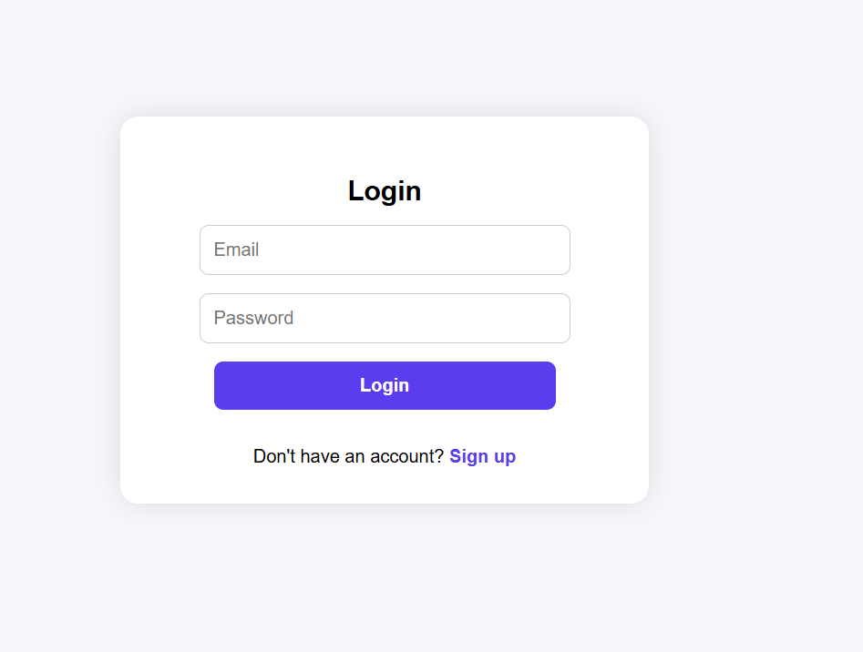
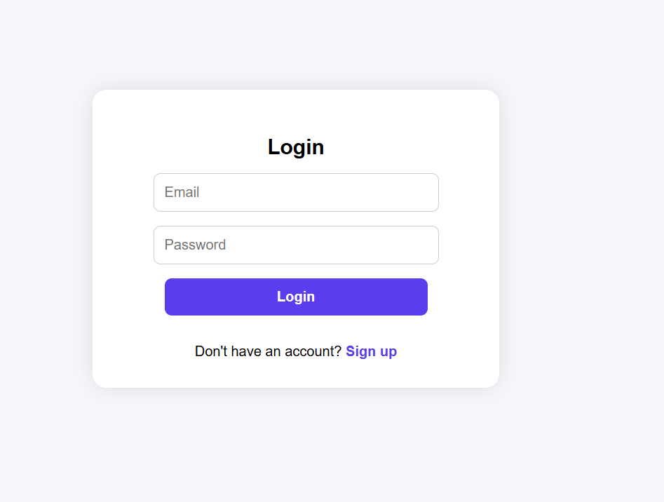

Welcome to My Portfolio
I'm Zain Mustafa, an electrical engineering student passionate about building systems from hardware to full-stack software.
I'm Zain Mustafa
As an electrical engineering student in UC Davis, I have taken a course load which has led me to develop a strong basis in the theoretical and practical aspects of engineering. In my time as the electrical lead for the First Nations Launch Rocketry Team I have been able to apply this knowledge by designing and implementing systems which utilize microcontrollers to collect and store data from multiple sensors on a rocket. This role honed my programming and data analysis skills which will help me with the demands of this position. Additionally, in my current role at the UC Davis School of Law, I have learned technical troubleshooting abilities. Using tools such as ServiceNow, I have learned how to prioritize tasks, communicate within a team environment, and maintain a high standard of support within a fast-paced environment.
Skills/Software
- Altium Designer
- C/C++
- KiCAD
- Fusion360
- MATLAB
- NI Multisim
- PCB Design
- Soldering
- RockSim & OpenRocket
- Python
- ServiceNow
- MongoDB Atlas
Projects
 

ZainLink: Full-Stack URL Shortener
Purpose: Personal Project
Duration: May 13, 2024 – Ongoing
Objective: ZainLink is a full-stack web application designed to securely shorten URLs with optional custom aliases. The website features include CAPTCHA protection, user authentication, and a live dashboard for managing links which the user has created. There is also an admin account which can manage all links created by other users straight from the dashboard on the website.
I handled both the frontend and backend architecture. The backend is built using the python framework Flask and connected to a MongoDB Atlas database. For deployment, I used Render for backend hosting and IONOS to point a custom domain (zainlink.com) to the app using DNS records. The frontend is built with HTML and CSS. I also added Google Analytics tracking to measure real user engagement.
Skills/Softwares Used
- HTML/CSS
- Flask (Python)
- MongoDB Atlas
- CAPTCHA Integration
- Google Analytics
- DNS Configuration


Rocketry Payload Electronics
Purpose: First Nations Launch Rocketry Competition
Duration: October 13, 2024 – April 26, 2025
Objective: The First Nations Launch (FNL) is a NASA-sponsored high-powered rocketry competition where teams must design, build, and launch rockets with scientific payloads. This year’s payload specifications required us to create a payload system to record environmental data and demonstrate real-time onboard sensing.
As the Payload Lead, I decided putting an atmospheric pressure and a 9 degrees of freedom sensor into our rocket. I programmed and calibrated the BMP280 sensor for pressure/altitude data, the ISM330DHCX sensor for acceleration and gyroscope data, and the MMC5983MA sensor for magnetometer measurements. I led breadboarding and final assembly of the electronics payload where I coordinated with the avionics team to ensure proper fit and thermal safety.
I had to conduct extensive ground testing and debugging to ensure the payload could handle real launch conditions without crashing or corrupting data. We also had two testing launches of the payload bay before the competition date where I made revisions to the payload after each test. After these test launches I created MATLAB scripts to plot the data which the sensors were collecting after launch. I delivered detailed technical write-ups and system diagrams for the competition through the different phases of development for the rocket.
Skills/Softwares Used
- MATLAB
- Arduino programming (C++)
- Sensor integration (I²C)
- RockSim & OpenRocket


PCB Design Project
Course: Digital Electronics
Duration: March 4, 2024 – March 30, 2024
Objective:This was an individual project and I decided to create a coin flipper that gives one of two outcomes randomly. To begin this project I first created a proof of concept by bread boarding the design and creating it on a simulation software called Multisim. Then I created the PCB design on Fusion 360 manually connecting and placing all of the components how I wanted them on the board. After printing this layout on a mask I transferred the mask onto a copper board using an iron. Then after washing away the excess copper using ferric chloride, I drilled holes in all of the places where I would place my components. Then I soldered all of the components to the board. This project challenged me to use my prior knowledge to create a brand-new circuit. During the project, I encountered some challenges. For example, during the creation of the PCB layout I had to figure out a format that would involve the least amount of jumper wires. I enjoyed working on the project and it gave me experience with creating a PCB circuit from scratch.
Skills/Softwares Used
- Fusion360
- Soldering
- NI Multisim
- PCB Design


Circuit Design Project
Course: Digital Electronics
Duration: October 11, 2023 – October 21, 2023
Objective: The purpose and goal of the project was to create a circuit that solves a problem utilizing both combinational and sequential logic. Besides this requirement, our project needed at least three inputs and one output. Ultimately our group decided to create an automated soccer referee system that determines whether a foul is a red or yellow card. To create this system, I was specifically tasked with completing the combinational logic portion of both the Multisim simulation and breadboard. This challenged me to implement my understanding of AOI logic components into a practical scenario. We began the project by listing out all of the inputs and outputs that the system would need to function. Once this was complete I began creating a truth table, so we would know what outputs would need to match for each of the inputs. Then I had to create a system of logic gates so every input would create the desired output that we needed. During the project, I encountered some challenges. For example, while creating the circuit there were many gates, and often times the inputs on the circuit did not match the truth table. However in order to solve this I simplified the number of gates needed which made it much easier to complete the Multisim. Overall I enjoyed working on the project and it gave me experience with creating a circuit in order to solve a real-world problem.
Skills/Softwares Used
- Logic Gates
- NI Multisim